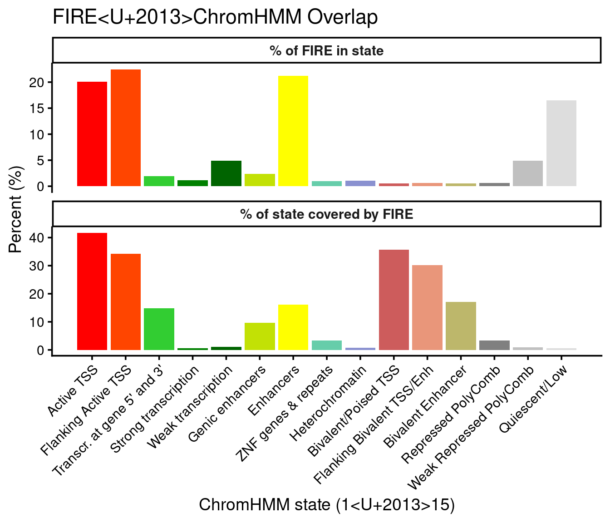
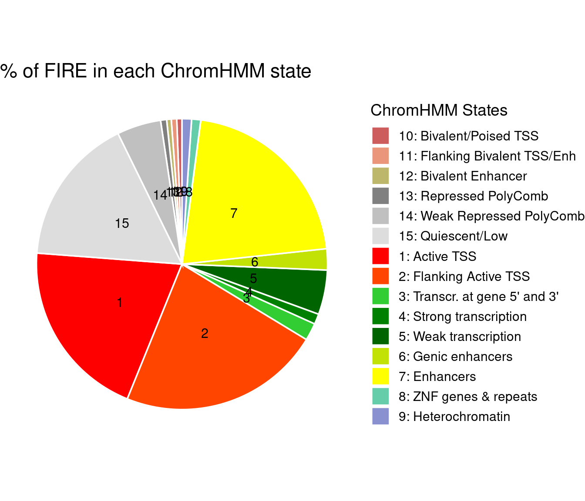

Last updated: 2026-02-20
Checks: 6 1
Knit directory: fiberseq/
This reproducible R Markdown analysis was created with workflowr (version 1.7.0). The Checks tab describes the reproducibility checks that were applied when the results were created. The Past versions tab lists the development history.
The R Markdown file has unstaged changes. To know which version of
the R Markdown file created these results, you’ll want to first commit
it to the Git repo. If you’re still working on the analysis, you can
ignore this warning. When you’re finished, you can run
wflow_publish to commit the R Markdown file and build the
HTML.
Great job! The global environment was empty. Objects defined in the global environment can affect the analysis in your R Markdown file in unknown ways. For reproduciblity it’s best to always run the code in an empty environment.
The command set.seed(20250831) was run prior to running
the code in the R Markdown file. Setting a seed ensures that any results
that rely on randomness, e.g. subsampling or permutations, are
reproducible.
Great job! Recording the operating system, R version, and package versions is critical for reproducibility.
Nice! There were no cached chunks for this analysis, so you can be confident that you successfully produced the results during this run.
Great job! Using relative paths to the files within your workflowr project makes it easier to run your code on other machines.
Great! You are using Git for version control. Tracking code development and connecting the code version to the results is critical for reproducibility.
The results in this page were generated with repository version 4820692. See the Past versions tab to see a history of the changes made to the R Markdown and HTML files.
Note that you need to be careful to ensure that all relevant files for
the analysis have been committed to Git prior to generating the results
(you can use wflow_publish or
wflow_git_commit). workflowr only checks the R Markdown
file, but you know if there are other scripts or data files that it
depends on. Below is the status of the Git repository when the results
were generated:
Unstaged changes:
Modified: analysis/fire_coverage_ChromHMM.Rmd
Note that any generated files, e.g. HTML, png, CSS, etc., are not included in this status report because it is ok for generated content to have uncommitted changes.
These are the previous versions of the repository in which changes were
made to the R Markdown
(analysis/fire_coverage_ChromHMM.Rmd) and HTML
(docs/fire_coverage_ChromHMM.html) files. If you’ve
configured a remote Git repository (see ?wflow_git_remote),
click on the hyperlinks in the table below to view the files as they
were in that past version.
| File | Version | Author | Date | Message |
|---|---|---|---|---|
| Rmd | 4820692 | XSun | 2026-02-19 | update |
| html | 4820692 | XSun | 2026-02-19 | update |
| Rmd | 49bb49d | XSun | 2026-02-19 | update |
| html | 49bb49d | XSun | 2026-02-19 | update |
Here we check if the 15 states are fully covered by the FIRE peaks. If so, we can only use the footprints in the FIRE peaks, instead of those called whole genome.
The FIRE peaks are shared by Kevin,
/project/spott/kevinluo/Fiber_seq/results/QTL/fireQTL/consensus_peaks/merged_fire_peaks_31samples.bed.gz
ChromHMM segmentations were downloaded from the Roadmap Epigenomics portal: https://egg2.wustl.edu/roadmap/data/byFileType/chromhmmSegmentations/ChmmModels/coreMarks/jointModel/final/
We used: E116_15_coreMarks_hg38lift_mnemonics.bed.gz
E116 corresponds to GM12878 (lymphoblastoid cells), which is the closest Roadmap epigenome match to our LCL cell line (based on the Roadmap epigenome metadata table).
We sum the total number of base pairs of all the 15 ChromHMM states inside FIRE peaks, and then divided by the total number of base pairs across all states.
Then, for each state, we do the same calculation.
suppressPackageStartupMessages({
library(GenomicRanges)
library(IRanges)
library(data.table)
library(ggplot2)
})
setwd("/project/spott/xsun/fiberseq/2.annotating_footprints/")
source("0.functions.R")
#-----------------------------
# 1) Load FIRE peaks (BED: 0-based start, 1-based end)
#-----------------------------
FIREpeak_df <- fread(
"/project/spott/kevinluo/Fiber_seq/results/QTL/fireQTL/consensus_peaks/merged_fire_peaks_31samples.bed.gz",
showProgress = FALSE
)
stopifnot(ncol(FIREpeak_df) >= 3)
setnames(FIREpeak_df, 1:3, c("chr","start0","end"))
FIRE_gr <- GRanges(
seqnames = FIREpeak_df$chr,
ranges = IRanges(start = FIREpeak_df$start0 + 1L, end = FIREpeak_df$end)
)
# IMPORTANT: merge overlapping FIRE peaks to avoid double-counting bp
FIRE_gr <- reduce(FIRE_gr, ignore.strand = TRUE)
#-----------------------------
# 2) Load ChromHMM (BED: 0-based start, 1-based end; V4 like "9_Het")
#-----------------------------
ChromHMM_df <- fread("data/E116_15_coreMarks_hg38lift_mnemonics.bed.gz", showProgress = FALSE)
ChromHMM_df <- ChromHMM_df[!is.na(V4) & V4 != ""]
setnames(ChromHMM_df, 1:4, c("chr","start0","end","state"))
# Parse state_id + mnemonic from "9_Het"
ChromHMM_df[, c("state_id","mnemonic") := tstrsplit(state, "_", fixed = TRUE)]
ChromHMM_df[, state_id := as.integer(state_id)]
ChromHMM_gr <- GRanges(
seqnames = ChromHMM_df$chr,
ranges = IRanges(start = ChromHMM_df$start0 + 1L, end = ChromHMM_df$end),
state_id = ChromHMM_df$state_id,
mnemonic = ChromHMM_df$mnemonic
)
# Optional: keep chr1-22 only (match your earlier convention)
keep_chr <- paste0("chr", 1:22)
ChromHMM_gr <- ChromHMM_gr[seqnames(ChromHMM_gr) %in% keep_chr]
FIRE_gr <- FIRE_gr[seqnames(FIRE_gr) %in% keep_chr]
# Keep only seqlevels present in both
common_chr <- intersect(seqlevelsInUse(ChromHMM_gr), seqlevelsInUse(FIRE_gr))
ChromHMM_gr <- keepSeqlevels(ChromHMM_gr, common_chr, pruning.mode = "coarse")
FIRE_gr <- keepSeqlevels(FIRE_gr, common_chr, pruning.mode = "coarse")
#-----------------------------
# 3) Compute bp overlaps: ChromHMM ∩ FIRE
# (ChromHMM is (typically) non-overlapping; FIRE has been reduced)
#-----------------------------
hits <- findOverlaps(ChromHMM_gr, FIRE_gr, ignore.strand = TRUE)
ov <- pintersect(ChromHMM_gr[queryHits(hits)], FIRE_gr[subjectHits(hits)], ignore.strand = TRUE)
ov_dt <- data.table(
state_id = mcols(ChromHMM_gr)$state_id[queryHits(hits)],
mnemonic = mcols(ChromHMM_gr)$mnemonic[queryHits(hits)],
ov_bp = width(ov)
)
# Overlap bp per state
ov_by_state <- ov_dt[, .(fire_overlap_bp = sum(ov_bp)), by = .(state_id, mnemonic)]
# Total bp per state genome-wide (within ChromHMM tracks you loaded)
tot_by_state <- data.table(
state_id = mcols(ChromHMM_gr)$state_id,
mnemonic = mcols(ChromHMM_gr)$mnemonic,
total_bp = width(ChromHMM_gr)
)[, .(total_bp_state = sum(total_bp)), by = .(state_id, mnemonic)]
# Merge + fill missing overlap states with 0
res <- merge(tot_by_state, ov_by_state, by = c("state_id","mnemonic"), all.x = TRUE)
res[is.na(fire_overlap_bp), fire_overlap_bp := 0L]
# Add your annotation (assumes chromhmm_annot exists in env)
# chromhmm_annot has: state_id, mnemonic, description, rgb, hex
res <- merge(res, chromhmm_annot[, .(state_id, mnemonic, description, hex)],
by = c("state_id","mnemonic"), all.x = TRUE)
#-----------------------------
# 4) Metrics you asked for
#-----------------------------
# (A) Overall fraction of ChromHMM bp covered by FIRE
overall_fire_coverage <- res[, sum(fire_overlap_bp)] / res[, sum(total_bp_state)]
# (B) For each state: percent of that state's bp covered by FIRE
# i.e., "do the 15 states fall in FIRE peaks"
res[, frac_state_covered_by_fire := fifelse(total_bp_state > 0, fire_overlap_bp / total_bp_state, NA_real_)]
# (C) Composition within FIRE: fraction of FIRE-overlap bp that is each state
# i.e., "proportion of states in FIRE"
res[, frac_of_fire_bp_in_state := fire_overlap_bp / sum(fire_overlap_bp)]
# (D) Helpful in plots
res[, `:=`(
fire_overlap_Mb = fire_overlap_bp / 1e6,
total_state_Mb = total_bp_state / 1e6
)]
#-----------------------------
# 5) Output
#-----------------------------
res <- res[order(state_id)]
res <- res[,-c("total_bp_state","fire_overlap_bp")]
res <- res[,c("state_id","description","total_state_Mb","fire_overlap_Mb","frac_state_covered_by_fire","frac_of_fire_bp_in_state","hex")]
res$frac_state_covered_by_fire <- res$frac_state_covered_by_fire*100
res$frac_of_fire_bp_in_state <- res$frac_of_fire_bp_in_state *100
colnames(res)[5:6] <- c("%state_covered_by_fire","%fire_in_state")
DT::datatable(res[,-c("hex")],caption = htmltools::tags$caption( style = 'caption-side: left; text-align: left; color:black; font-size:150% ;','FIRE Coverage for 15 states from ChromHMM'),options = list(pageLength = 20) )cat("\nOverall ChromHMM bp covered by FIRE =", overall_fire_coverage*100, "%\n")
Overall ChromHMM bp covered by FIRE = 2.164717 %plot_df <- copy(res)
plot_long <- melt(
plot_df,
id.vars = c("state_id", "description", "hex"),
measure.vars = c("%state_covered_by_fire", "%fire_in_state"),
variable.name = "metric",
value.name = "value"
)
# Simple labels
plot_long[, metric := fifelse(
metric == "%state_covered_by_fire",
"% of state covered by FIRE",
"% of FIRE in state"
)]
ggplot(plot_long, aes(x = state_id, y = value, fill = hex)) +
geom_col() +
facet_wrap(~ metric, ncol = 1, scales = "free_y") +
scale_fill_identity() +
scale_x_continuous(
breaks = plot_df$state_id,
labels = plot_df$description
) +
labs(
x = "ChromHMM state (1–15)",
y = "Percent (%)",
title = "FIRE–ChromHMM Overlap"
) +
theme_classic(base_size = 14) +
theme(
axis.text.x = element_text(angle = 45, hjust = 1),
strip.text = element_text(face = "bold"),
legend.position = "none"
)
pie_df <- copy(res)
# Ensure ordering by state_id
setorder(pie_df, state_id)
# Create numeric labels (1–15)
pie_df[, state_label := as.character(state_id)]
# Create legend labels: "1: Active TSS"
pie_df[, legend_label := paste0(state_id, ": ", description)]
ggplot(pie_df,
aes(x = "",
y = `%fire_in_state`,
fill = legend_label)) +
geom_col(width = 1, color = "white") +
coord_polar(theta = "y") +
scale_fill_manual(values = setNames(pie_df$hex,
pie_df$legend_label)) +
theme_void(base_size = 14) +
labs(
title = "% of FIRE in each ChromHMM state",
fill = "ChromHMM States"
) +
geom_text(
aes(label = state_label),
position = position_stack(vjust = 0.5),
size = 4,
color = "black"
)
sessionInfo()R version 4.2.0 (2022-04-22)
Platform: x86_64-pc-linux-gnu (64-bit)
Running under: CentOS Linux 7 (Core)
Matrix products: default
BLAS/LAPACK: /software/openblas-0.3.13-el7-x86_64/lib/libopenblas_haswellp-r0.3.13.so
locale:
[1] C
attached base packages:
[1] stats4 stats graphics grDevices utils datasets methods
[8] base
other attached packages:
[1] ggplot2_4.0.0 data.table_1.14.2 GenomicRanges_1.48.0
[4] GenomeInfoDb_1.39.9 IRanges_2.30.0 S4Vectors_0.34.0
[7] BiocGenerics_0.42.0
loaded via a namespace (and not attached):
[1] tidyselect_1.2.0 xfun_0.41 bslib_0.3.1
[4] vctrs_0.6.5 generics_0.1.4 htmltools_0.5.2
[7] yaml_2.3.5 utf8_1.2.2 rlang_1.1.2
[10] R.oo_1.24.0 jquerylib_0.1.4 later_1.3.0
[13] pillar_1.9.0 R.utils_2.11.0 withr_2.5.0
[16] glue_1.6.2 RColorBrewer_1.1-3 S7_0.2.0
[19] GenomeInfoDbData_1.2.8 lifecycle_1.0.4 stringr_1.5.1
[22] zlibbioc_1.42.0 gtable_0.3.6 workflowr_1.7.0
[25] R.methodsS3_1.8.1 htmlwidgets_1.5.4 evaluate_0.15
[28] labeling_0.4.2 knitr_1.39 fastmap_1.1.0
[31] crosstalk_1.2.0 httpuv_1.6.5 fansi_1.0.3
[34] highr_0.9 Rcpp_1.0.12 DT_0.22
[37] promises_1.2.0.1 scales_1.4.0 jsonlite_1.8.0
[40] XVector_0.36.0 farver_2.1.0 fs_1.5.2
[43] digest_0.6.29 stringi_1.7.6 dplyr_1.1.4
[46] rprojroot_2.0.3 grid_4.2.0 cli_3.6.1
[49] tools_4.2.0 bitops_1.0-7 magrittr_2.0.3
[52] sass_0.4.1 RCurl_1.98-1.7 tibble_3.2.1
[55] dichromat_2.0-0.1 whisker_0.4 pkgconfig_2.0.3
[58] rmarkdown_2.25 rstudioapi_0.13 R6_2.5.1
[61] git2r_0.30.1 compiler_4.2.0